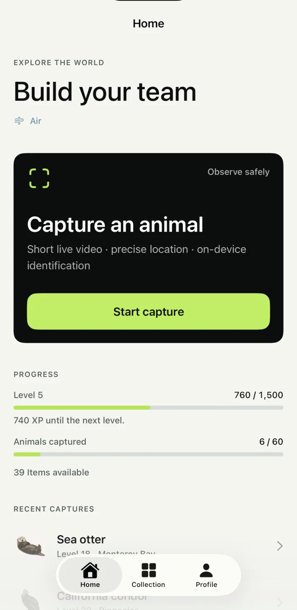
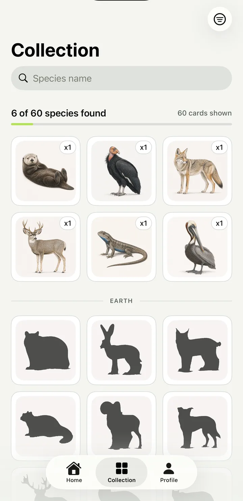
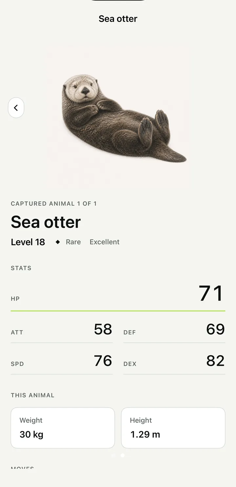
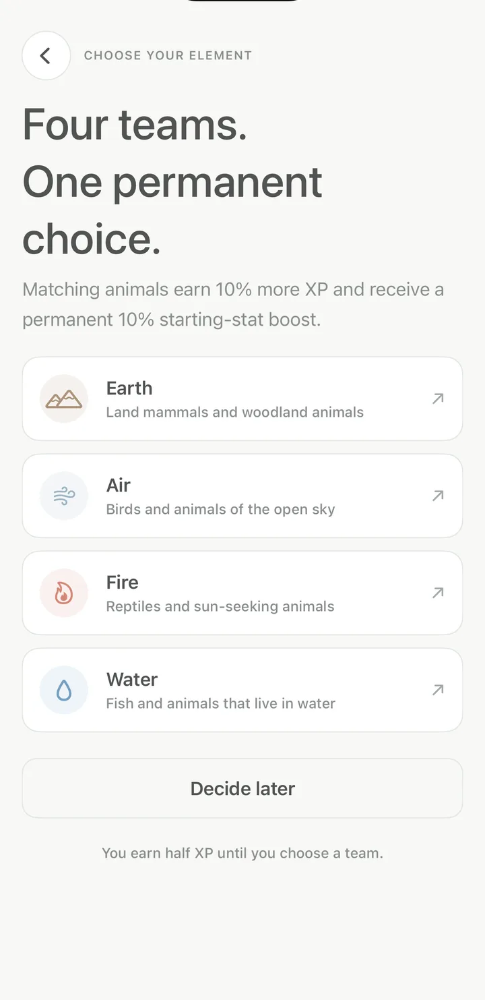

Now on the App Store
Explore. Discover. Battle.
Record real animals with short live video. Identification runs on your iPhone. Unlock, level, and upgrade what you find to build your team.
The loop
Go outside. Come back with something.
-
01
Capture
Point your iPhone at a real animal and record a few seconds of live video. Location is checked at the moment of capture.
-
02
Identify
The species model runs on the device. Your original video never leaves your phone, and an uncertain sighting is told it is uncertain.
-
03
Collect
Every capture earns XP and items, and adds a drawn portrait to your collection with stats drawn from the animal you actually found.
Inside the app
A quiet interface around remarkable animals.




Four teams
Pick an element. Keep it for good.
Matching animals earn more XP and start stronger. You choose once, and the choice follows every capture after it.
- Earth
- Land mammals and woodland animals
- Air
- Birds and animals of the open sky
- Fire
- Reptiles and sun-seeking animals
- Water
- Fish and animals that live in water